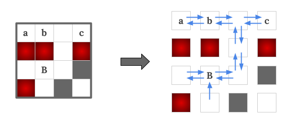
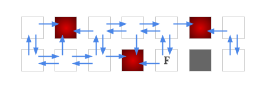
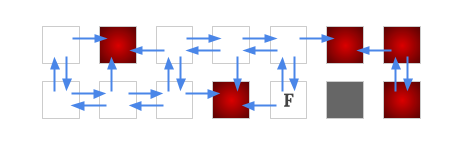
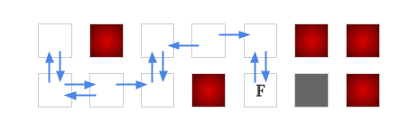
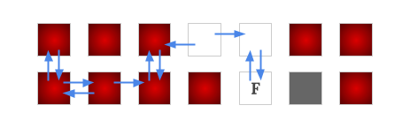
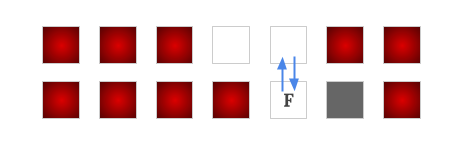
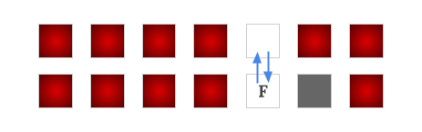

Since there are at most 26 interesting finishes, we can find a list of interesting starts that are drivable to each of the interesting finishes separately. We can solve this in a more generic way: For a given interesting finish cell location, determine whether each of the other cells in the grid is drivable to the interesting finish cell or not.
Our goal is to build a graph from the given grid, where each cell is seen as a node, and for each pair of adjacent cells $$$(c_a, c_b)$$$, add a directed edge from $$$c_a$$$ to $$$c_b$$$ if there exist a strategy to force the car move from $$$c_a$$$ to $$$c_b$$$ safely. Note that the edges between two cells are not necessary to be bidirectional.

Take Sample Case #1's interesting finish $$$B$$$ as example, the blue arrow edges are added for each pair of cells if there exist a strategy to force the car go along the direction safely. From observation, we can see that $$$a, b, c$$$ are all drivable to the interesting finish $$$B$$$. Also note that there is not an edge from $$$B$$$ to its south side neighbor. This is because there is a hazard in its north side so it is not safe to make the "north/south" command when the car is on the cell $$$B$$$.
Determining an edge between two cells is not as simple as avoiding hazards, because in addition to the hazards, there will also be some empty cells that are not drivable to the interesting finish, which we will need to avoid. Below we show how to build a graph for a fixed interesting finish, and once the graph is built, how to determine which nodes (cell) are drivable to the interesting finish.
We can first temporarily put edges between each pair of adjacent cells, as the car has possibilities to move between them. Then whenever we identify a move is unsafe, i.e., some edges are found as we are unable to force the car to go along their directions safely, then we remove those edges.
Specifically the steps are, we first build an edge from each of the empty cells to its four neighboring cells if it is not a wall. Then after running a BFS/DFS from the interesting finish with edges reversed, we can discover the nodes that are never drivable to the interesting finish (i.e., there does not exist a path from that node to the interesting finish). These nodes are now seen as "non-winning" nodes.


Having these non-winning nodes identified, we must remove some edges from the graph. Precisely, if a node has a non-winning node at its west side, then we must remove the edges to its west neighbor and also the edge to its east neighbor. Likewise for the north and south edges.

Since some edges are removed, it will result in getting more non-winning nodes. We can run a BFS/DFS again on the current graph to find out those non-winning nodes. We iteratively repeat these two steps to identify non-winning nodes and remove edges, until there is no more non-winning nodes to be identified. Then this final graph is what we wanted to build, and all the cells on the final winning positions are the cells drivable to the interesting finish.



Since in each iteration, there are at least one new non-winning node identified, and there are at most $$$O(\mathbf{R}\times\mathbf{C})$$$ nodes in the graph, thus we have at most $$$O(\mathbf{R}\times\mathbf{C})$$$ iterations. And in each iteration, a $$$O(\mathbf{R}\times\mathbf{C})$$$ BFS/DFS is run. Thus the time complexity of this solution is $$$O((\mathbf{R}\times\mathbf{C})^2)$$$. This must be done separately for each interesting finish, hence the total time complexity for finding all the drivable pairs is $$$O((\mathbf{R}\times\mathbf{C})^2\times num\_of\_finishes)$$$